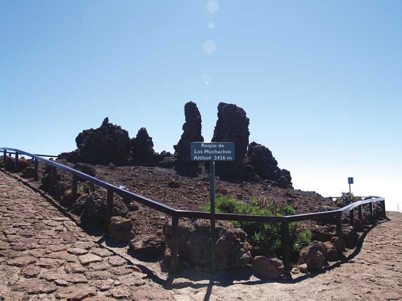
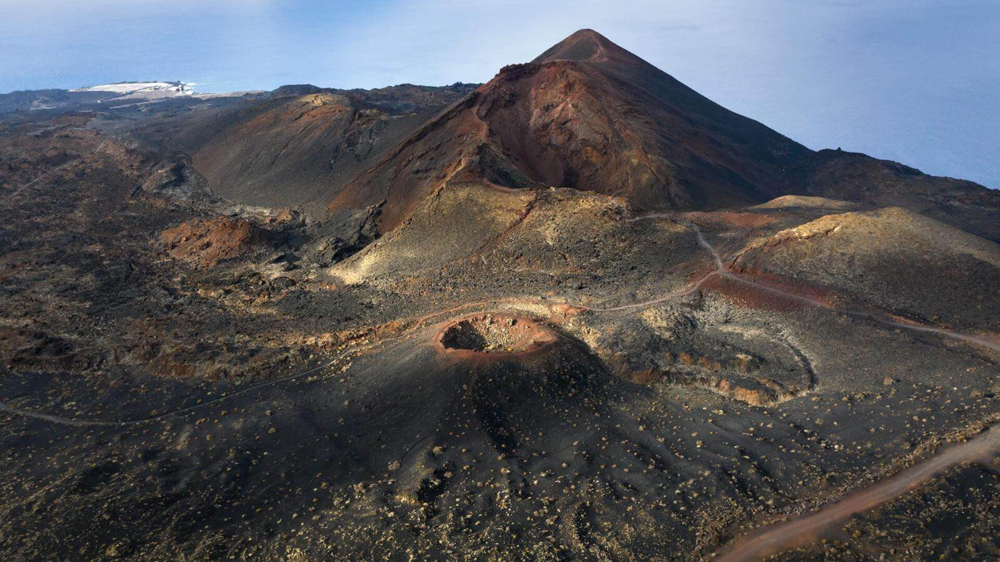

La isla bonita
Príncipe Alberto |
El príncipe Alberto es un postre de la cocina palmeña, hecho principalmente de chocolate y café, siendo bastante dulce y teniendo un sabor exquisito y una textura suave. |
Queso de almendras |
El queso de almendras es un portre típico de la palma, siendo esta isla en la que abundan más los almendros, haciendo que sea un postre mayoritariamente de temporada. Peculiarmente este postre lleva mucho azúcar haciendo que sea muy dulce y en ocasiones inhibiendo el sabor de las almendras. |
Papas arrugadas con mojo picón |
Uno de los platos más importantes de la gastronomía canaria, o por lo menos de los más conocidos, es este de papas arrugás con mojo picón. Seguramente, el mojo picón es una de las salsas más deliciosas que hay y gracias a su intenso sabor resulta perfecta para acompañar platos tanto de pescado como de carne, además de este de papas. |
Vieja frita |
Estamos en una isla y eso es sinónimo de buen pescado. Uno de los más populares es la vieja, un pescado blanco autóctono de las Islas Canarias y cuyo peculiar sabor dicen que se asemeja al marisco. Esto debe ser por la forma de su boca, con dientes fuertes que le permiten alimentarse de especies como los cangrejos, que los tritura con sus mandíbulas. |
El Parque Natural de Cumbre Vieja se extiende desde el centro hasta el sur de la isla de La Palma. En él se pueden observar desde las coladas volcánicas prehistóricas hasta las más recientes, que datan de la erupción del volcán Teneguía en el año 1971. Algunos de los volcanes del Parque Natural de Cumbre Vieja acogen diversas especies vegetales y animales protegidas. El pinar que puebla gran parte del parque contrasta con el color oscuro de la tierra para crear un paisaje impresionante. |
Cumbre Vieja |
El Mirador Astronómico del Llano del Jable está ubicado en el municipio de El Paso, a unos 1341 metros de altura, desde el cual se puede disfrutar de una vista panorámica del Valle de Aridane y de una magnífica puesta de Sol. El Llano del Jable representa un lugar especial para la observación nocturna del cielo, debido a que las nubes suelen quedarse por debajo de los 1300 metros de altura (cubriendo la ya de por sí poca contaminación lumínica del Valle), por lo que desde aquí se puede contemplar un maravilloso cielo estrellado. |
Mirador de Jable |
El mirador del Roque de los Muchachos está en la cima de la isla de La Palma, uno de los lugares del mundo con mejor cielo para la observación astronómica. A sus pies hay una vista impresionante de una gigantesca caldera volcánica de 1.500 metros de profundidad cubierta de árboles, con rocas volcánicas de formas caprichosas y declarada Parque Nacional. Para quien se queda en La Palma, la visita es obligada. Para quien sufre de vértigo, se recomienda prepararse para la magnitud del espectáculo visual. |

El Roque de los muchachos |
En 1971, el volcán Teneguía apareció en portada de noticiarios de todo el mundo al abrirse y surgir de su interior miles de metros cúbicos de magma incandescente. La última erupción volcánica en superficie de Canarias cubrió de lava y gravilla volcánica buena parte del extremo sur de la isla de La Palma, creando una nueva atracción turística. Para preservar las vírgenes lavas del volcán Teneguía y las de su compañero del siglo XVIII, el volcán San Antonio, se declaró este monumento natural. |

Volcán de Teneguia |